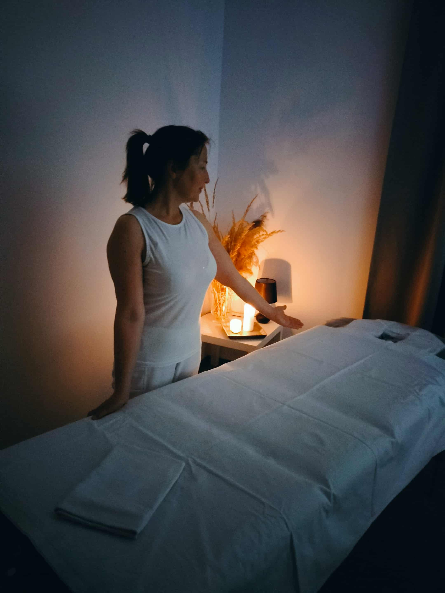
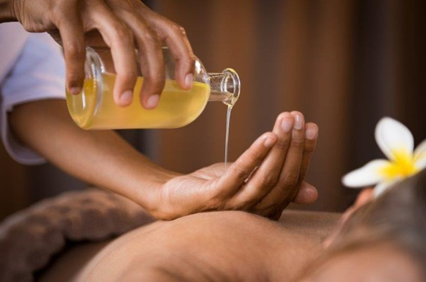

Masáže v Banskej Štiavnici
Katarína Kéryová
Poznajte ma
O mne
Volám sa Katka a rada by som vás pozvala na moju masáž 😊

Masáže sa stali mojou záľubou a prácou, ktorá mi prináša zmysel do života a radosť do môjho srdca.
Tento pekný pocit sa snažím vniesť do každej masáže, odovzdať ho svojim dotykom a plnou pozornosťou, ktorú venujem svojim klientom.
Pri masážach používam viaceré masérske techniky, ktoré spolu rôzne kombinujem, podľa želania a potreby konkrétneho človeka. Väčšinou až počas masáže zistím, ktorej časti tela je potrebné venovať viac pozornosti, kde sú stuhnuté miesta, nahromadené napätie a stres. Aj preto je každá masáž individuálna a jedinečná.
Zároveň sa snažím vniesť do chvíle, ktorú sa človek rozhodol venovať sebe, svojmu zdraviu a relaxácii pokoj, harmóniu a nesklamať dôveru, ktorá bola na chvíľku vložená do mojich rúk.
Pozitívne spätné väzby od klientov mi dávajú silu posúvať sa ďalej a zároveň nádej, že táto práca má hlbší zmysel nie len pre mňa, ale aj pre druhých.
Aktuálna ponuka služieb
Masáže
-
 Havajská masáž Lomi–lomi Hlboká relaxácia a regenerácia tela aj duše30 €
Havajská masáž Lomi–lomi Hlboká relaxácia a regenerácia tela aj duše30 € -
 Lávové kamene /Hot stones/ Liečivá sila TEPLA kameňov35 €
Lávové kamene /Hot stones/ Liečivá sila TEPLA kameňov35 € -
 Antistresová masáž hlavy Uvoľnenie napätia v oblasti hlavy, šije a tváre35 €
Antistresová masáž hlavy Uvoľnenie napätia v oblasti hlavy, šije a tváre35 € -
 Reflexná masáž chodidiel Regenerácia tela reflexne cez chodidlá45 €
Reflexná masáž chodidiel Regenerácia tela reflexne cez chodidlá45 € -
 Lymfatická masáž (manuálna lymfodrenáž) Podpora lymfatického systému40 €
Lymfatická masáž (manuálna lymfodrenáž) Podpora lymfatického systému40 € -
 Klasická masáž Uvolnenie a regenerácia svalov38 €
Klasická masáž Uvolnenie a regenerácia svalov38 € -
 Mäkké a myofasciálne techniky Uvoľnenie podkožia a spojivových tkanív42 €
Mäkké a myofasciálne techniky Uvoľnenie podkožia a spojivových tkanív42 €
Účel a účinky masáží

Všeobecne je práca maséra zameraná na uvoľnenie zvýšeného napätia vo svaloch, ktoré vzniklo jednostranným preťažovaním, nesprávnymi pohybovými stereotypmi a stresom.
Masáž zabezpečuje obnovu funkcií mäkkých tkanív – podkožia a fascií, vrátenie rozsahu pohybu, rozprúdenie lymfatického a krvného obehu, odstránenie opuchov. Podporuje metabolizmus, detoxikáciu organizmu a posilňuje imunitu. Napomáha pri rekonvalescencii a regenerácii.
Vyvoláva pozitívne emócie, uvoľňuje psychické napätie. Prináša relaxáciu a harmonizáciu tela aj duše.
Práca s olejom pri masáži nie je len o „premastení“ pokožky, ale o technike, ktorá zásadne mení dynamiku hmatov a komfort klienta. Olej znižuje trenie, čo umožňuje vykonávať plynulé, ťahavé pohyby, ktoré by na suchej pokožke boli bolestivé.
Aromaterapia pri masáži spája relaxačnú silu dotyku s liečivými účinkami esenciálnych olejov na telo aj psychiku. Počas masáže sa oleje vstrebávajú cez pokožku a zároveň sa inhalujú, čím ovplyvňujú limbický systém v mozgu zodpovedný za emócie.
Kontraindikácie masáží
Niektoré akútne alebo chronické zdravotné problémy môžu byť pre masáže kontraindikáciou – masáž nie je v tomto prípade vhodná.
- Akútne bakteriálne alebo vírusové infekcie, horúčkové stavy
- Aktívne nádorové (onkologické) ochorenie
- Vážne kardiovaskulárne ochorenia a vysoký krvný tlak
- Vážne ochorenia pečene, obličiek a štítnej žľazy
- Aktívna dna, aktívna reuma – v akútnom štádiu zápalu
- Pokročilé štádiá žilového ochorenia s rizikom trombózy, embólie (zápaly, vredy)
- Otvorené rany, hnisavé a bakteriálne ochorenia kože, plesne
- Herpes, pásový opar
- Opuchy nejasného pôvodu, brušné problémy nejasného pôvodu
- Prvý trimester tehotenstva